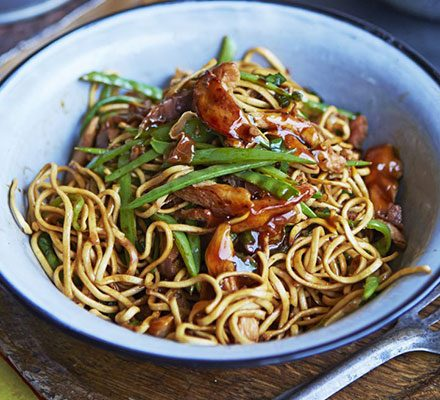
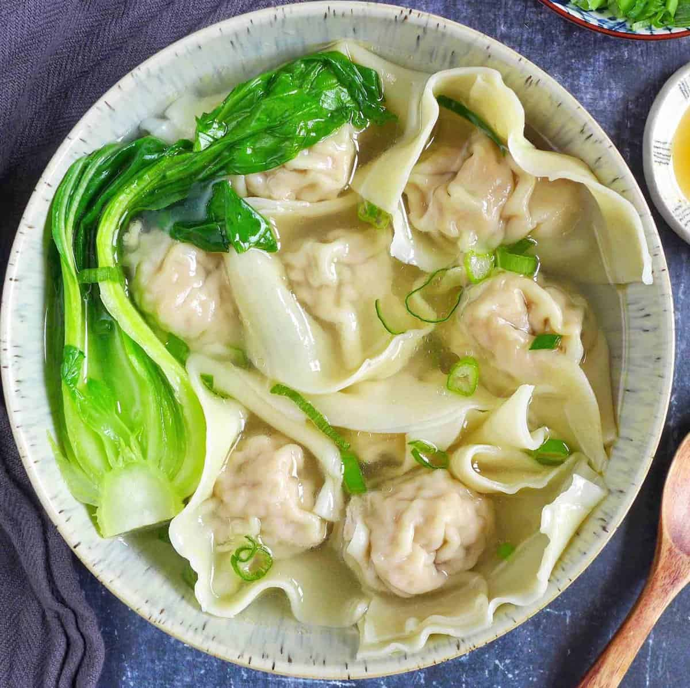

Sweet and Sour Pork

This is a dish which is both deliciously sweet and sour, the meat can be
subsituted with chicken and beef.
Hot Pot
Very popular Chinese dish of a flavourful broth served in a pot with raw
ingredients like meat and vegetables.
Dim Sum

Popular dish that is served in small portions usually filled with meat, seafood
and vegetables.
Dumplings

Delicious small bite sized treats of filling wrapped dough. This is a thin layer
filled with minced meat and/or vegetables.
Chow Mein

Stir fried thin or thick noodles with meat which can be chicken, beef, shrimp or
pork. Along with vegetables.
Fried Rice
Very popular dish made from fried cooked rice and eggs. Other ingredients can be
added such as meat and vegetables.
Xiaolongbao
These are soup dumplings, usually filled with seasoned pork and flavourful soup.
The meat can be replaced with beef, seafood and vegetables.
Wonton Soup

Similar to dumplings but have less filling and are wrapped in an even thinner
layer of dough. These are mostly filled with minced pork or diced shrimp.
Zhajiangmian
Made from thick noodles that have been fried topped with zhajiang sauce. The
sauce made from pork or beef with fermented soybean paste.
< >